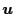
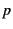
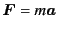
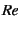
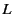
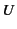
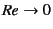

Next: Many Body Problem
Up: libstokes: Library for Stokesian
Previous: 3D/monolayer d
In the following, physical background is explained.
Fluid is described by Navier-Stokes equation
where  is the fluid velocity,
 is the pressure, is the density,
and is the viscosity.
The differential operator
and is the Laplacian
This is the fluid equation of motion, in other words,
the momentum balance equation and the counterpart of
Newton's equation of motion
.
Actually, writing the viscous fluid stress by
Navier-Stokes equation (3.2) can be written by
the similar equation of motion
The Stokes flows, which is the target of libstokes,
is where the viscous term in Eq. (3.2)
is dominating to the inertial term.
The ratio of the magnitude of these two terms are characterized
by a dimensionless number called ``Reynolds number'' 
where  and  are characteristic length and velocity.
The Stokes flows are the flow of small Reynolds number.
In the limit
,
the governing equation of fluids becomes
which is a linear partial differential equation.
In the following, we are studying fluid motions
governed by Eq. (3.8)
for incompressible fluid
Subsections
Next: Many Body Problem
Up: libstokes: Library for Stokesian
Previous: 3D/monolayer d
Kengo Ichiki 2008-10-12